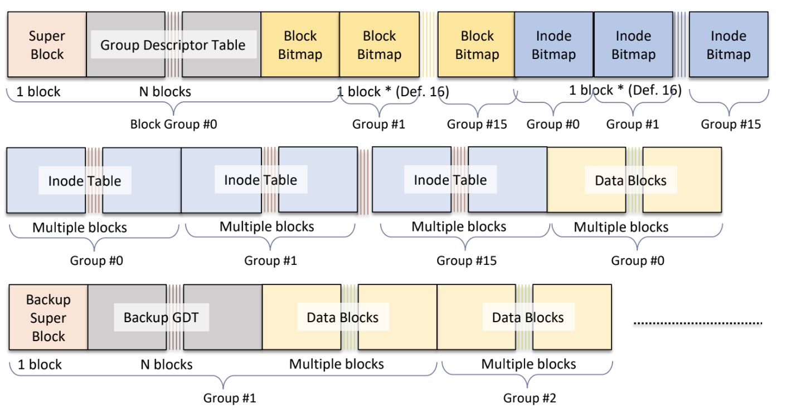

<!DOCTYPE html>
<html><head><title>10. Ext4 Filesystem</title><meta charSet="utf-8"/><meta name="viewport" content="width=device-width, initial-scale=1.0"/><meta property="og:title" content="10. Ext4 Filesystem"/><meta property="og:description" content="서울대학교 컴퓨터공학과 김진수 교수님의 &amp;quot;고급 운영체제&amp;quot; 강의를 필기한 내용입니다. 다소 잘못된 내용과 구어적 표현 이 포함되어 있을 수 있습니다. Ext4 § Minix FS 에서 진화한 Ext FS 가 계속 발전해 지금의 Ext4 까지 왔다. FS 전체 용향은 최대 1EB 까지 늘릴 수 있고 파일 하나당의 크기는 16TB 까지 늘릴 수 있다고 한다."/><meta property="og:image" content="https://mdg.haeramk.im/static/og-image.png"/><meta property="og:width" content="1200"/><meta property="og:height" content="675"/><link rel="icon" href="../../../../static/icon.png"/><meta name="description" content="서울대학교 컴퓨터공학과 김진수 교수님의 &amp;quot;고급 운영체제&amp;quot; 강의를 필기한 내용입니다. 다소 잘못된 내용과 구어적 표현 이 포함되어 있을 수 있습니다. Ext4 § Minix FS 에서 진화한 Ext FS 가 계속 발전해 지금의 Ext4 까지 왔다. FS 전체 용향은 최대 1EB 까지 늘릴 수 있고 파일 하나당의 크기는 16TB 까지 늘릴 수 있다고 한다."/><meta name="generator" content="Quartz"/><link rel="preconnect" href="https://fonts.googleapis.com"/><link rel="preconnect" href="https://fonts.gstatic.com"/><link href="../../../../index.css" rel="stylesheet" type="text/css" spa-preserve/><link href="https://cdn.jsdelivr.net/npm/katex@0.16.0/dist/katex.min.css" rel="stylesheet" type="text/css" spa-preserve/><link href="https://fonts.googleapis.com/css2?family=IBM Plex Mono&amp;family=Gowun Batang:wght@400;700&amp;family=Gowun Dodum:ital,wght@0,400;0,600;1,400;1,600&amp;display=swap" rel="stylesheet" type="text/css" spa-preserve/><script src="../../../../prescript.js" type="application/javascript" spa-preserve></script><script type="application/javascript" spa-preserve>const fetchData = fetch(`../../../../static/contentIndex.json`).then(data => data.json())</script></head><body data-slug="gardens/os/originals/aos.spring.2024.cse.snu.ac.kr/10.-Ext4-Filesystem"><div id="quartz-root" class="page"><div id="quartz-body"><div class="left sidebar"><h1 class="page-title "><a href="../../../..">Madison Digital Garden</a></h1><div class="spacer mobile-only"></div><div class="search "><div id="search-icon"><p>Search</p><div></div><svg tabIndex="0" aria-labelledby="title desc" role="img" xmlns="http://www.w3.org/2000/svg" viewBox="0 0 19.9 19.7"><title id="title">Search</title><desc id="desc">Search</desc><g class="search-path" fill="none"><path stroke-linecap="square" d="M18.5 18.3l-5.4-5.4"></path><circle cx="8" cy="8" r="7"></circle></g></svg></div><div id="search-container"><div id="search-space"><input autocomplete="off" id="search-bar" name="search" type="text" aria-label="Search for something" placeholder="Search for something"/><div id="results-container"></div></div></div></div><div class="darkmode "><input class="toggle" id="darkmode-toggle" type="checkbox" tabIndex="-1"/><label id="toggle-label-light" for="darkmode-toggle" tabIndex="-1"><svg xmlns="http://www.w3.org/2000/svg" xmlnsXlink="http://www.w3.org/1999/xlink" version="1.1" id="dayIcon" x="0px" y="0px" viewBox="0 0 35 35" style="enable-background:new 0 0 35 35;" xmlSpace="preserve"><title>Light mode</title><path d="M6,17.5C6,16.672,5.328,16,4.5,16h-3C0.672,16,0,16.672,0,17.5    S0.672,19,1.5,19h3C5.328,19,6,18.328,6,17.5z M7.5,26c-0.414,0-0.789,0.168-1.061,0.439l-2,2C4.168,28.711,4,29.086,4,29.5    C4,30.328,4.671,31,5.5,31c0.414,0,0.789-0.168,1.06-0.44l2-2C8.832,28.289,9,27.914,9,27.5C9,26.672,8.329,26,7.5,26z M17.5,6    C18.329,6,19,5.328,19,4.5v-3C19,0.672,18.329,0,17.5,0S16,0.672,16,1.5v3C16,5.328,16.671,6,17.5,6z M27.5,9    c0.414,0,0.789-0.168,1.06-0.439l2-2C30.832,6.289,31,5.914,31,5.5C31,4.672,30.329,4,29.5,4c-0.414,0-0.789,0.168-1.061,0.44    l-2,2C26.168,6.711,26,7.086,26,7.5C26,8.328,26.671,9,27.5,9z M6.439,8.561C6.711,8.832,7.086,9,7.5,9C8.328,9,9,8.328,9,7.5    c0-0.414-0.168-0.789-0.439-1.061l-2-2C6.289,4.168,5.914,4,5.5,4C4.672,4,4,4.672,4,5.5c0,0.414,0.168,0.789,0.439,1.06    L6.439,8.561z M33.5,16h-3c-0.828,0-1.5,0.672-1.5,1.5s0.672,1.5,1.5,1.5h3c0.828,0,1.5-0.672,1.5-1.5S34.328,16,33.5,16z     M28.561,26.439C28.289,26.168,27.914,26,27.5,26c-0.828,0-1.5,0.672-1.5,1.5c0,0.414,0.168,0.789,0.439,1.06l2,2    C28.711,30.832,29.086,31,29.5,31c0.828,0,1.5-0.672,1.5-1.5c0-0.414-0.168-0.789-0.439-1.061L28.561,26.439z M17.5,29    c-0.829,0-1.5,0.672-1.5,1.5v3c0,0.828,0.671,1.5,1.5,1.5s1.5-0.672,1.5-1.5v-3C19,29.672,18.329,29,17.5,29z M17.5,7    C11.71,7,7,11.71,7,17.5S11.71,28,17.5,28S28,23.29,28,17.5S23.29,7,17.5,7z M17.5,25c-4.136,0-7.5-3.364-7.5-7.5    c0-4.136,3.364-7.5,7.5-7.5c4.136,0,7.5,3.364,7.5,7.5C25,21.636,21.636,25,17.5,25z"></path></svg></label><label id="toggle-label-dark" for="darkmode-toggle" tabIndex="-1"><svg xmlns="http://www.w3.org/2000/svg" xmlnsXlink="http://www.w3.org/1999/xlink" version="1.1" id="nightIcon" x="0px" y="0px" viewBox="0 0 100 100" style="enable-background='new 0 0 100 100'" xmlSpace="preserve"><title>Dark mode</title><path d="M96.76,66.458c-0.853-0.852-2.15-1.064-3.23-0.534c-6.063,2.991-12.858,4.571-19.655,4.571  C62.022,70.495,50.88,65.88,42.5,57.5C29.043,44.043,25.658,23.536,34.076,6.47c0.532-1.08,0.318-2.379-0.534-3.23  c-0.851-0.852-2.15-1.064-3.23-0.534c-4.918,2.427-9.375,5.619-13.246,9.491c-9.447,9.447-14.65,22.008-14.65,35.369  c0,13.36,5.203,25.921,14.65,35.368s22.008,14.65,35.368,14.65c13.361,0,25.921-5.203,35.369-14.65  c3.872-3.871,7.064-8.328,9.491-13.246C97.826,68.608,97.611,67.309,96.76,66.458z"></path></svg></label></div></div><div class="center"><div class="page-header"><div class="popover-hint"><h1 class="article-title ">10. Ext4 Filesystem</h1><p class="content-meta ">Apr 02, 2024, 10 min read</p><ul class="tags "><li><a href="../../../../tags/강의록" class="internal tag-link">#강의록</a></li><li><a href="../../../../tags/snu-aos24s" class="internal tag-link">#snu-aos24s</a></li><li><a href="../../../../tags/draft" class="internal tag-link">#draft</a></li></ul></div></div><article class="popover-hint"><blockquote class="callout" data-callout="info">
<div class="callout-title">
                  <div class="callout-icon"><svg xmlns="http://www.w3.org/2000/svg" width="100%" height="100%" viewBox="0 0 24 24" fill="none" stroke="currentColor" stroke-width="2" stroke-linecap="round" stroke-linejoin="round"><circle cx="12" cy="12" r="10"></circle><line x1="12" y1="16" x2="12" y2="12"></line><line x1="12" y1="8" x2="12.01" y2="8"></line></svg></div>
                  <div class="callout-title-inner"><p>서울대학교 컴퓨터공학과 김진수 교수님의 &quot;고급 운영체제&quot; 강의를 필기한 내용입니다. </p></div>
                  
                </div>
</blockquote>
<blockquote class="callout" data-callout="warning">
<div class="callout-title">
                  <div class="callout-icon"><svg xmlns="http://www.w3.org/2000/svg" width="100%" height="100%" viewBox="0 0 24 24" fill="none" stroke="currentColor" stroke-width="2" stroke-linecap="round" stroke-linejoin="round"><path d="m21.73 18-8-14a2 2 0 0 0-3.48 0l-8 14A2 2 0 0 0 4 21h16a2 2 0 0 0 1.73-3Z"></path><line x1="12" y1="9" x2="12" y2="13"></line><line x1="12" y1="17" x2="12.01" y2="17"></line></svg></div>
                  <div class="callout-title-inner"><p>다소 잘못된 내용과 구어적 표현 이 포함되어 있을 수 있습니다. </p></div>
                  
                </div>
</blockquote>
<h2 id="ext4">Ext4<a aria-hidden="true" tabindex="-1" href="#ext4" class="internal"> §</a></h2>
<ul>
<li>Minix FS 에서 진화한 Ext FS 가 계속 발전해 지금의 Ext4 까지 왔다.
<ul>
<li>FS 전체 용향은 최대 1EB 까지 늘릴 수 있고</li>
<li>파일 하나당의 크기는 16TB 까지 늘릴 수 있다고 한다.</li>
</ul>
</li>
</ul>
<h2 id="direct-indirect-blocks-ext3">Direct, indirect blocks (~Ext3)<a aria-hidden="true" tabindex="-1" href="#direct-indirect-blocks-ext3" class="internal"> §</a></h2>
<p></p>
<ul>
<li>뭐 기본적으로 생긴 것은 똑같다.
<ul>
<li>Inode 하나는 256byte 크기이고,</li>
<li>Direct 에는 data block 이 연결되고 Single-indirect/Double-indirect 에는 indirect block 이 연결되는</li>
</ul>
</li>
<li>Ext4 이전 상황은 아래와 같다고 하더라
<ul>
<li>4Ki 사이즈 block 를 기준으로 했을 때, Inode 하나에는
<ul>
<li>Direct block: 파일 사이즈 <span class="math math-inline"><span class="katex"><span class="katex-html" aria-hidden="true"><span class="base"><span class="strut" style="height:0.6444em;"></span><span class="mord">10</span><span class="mspace" style="margin-right:0.2222em;"></span><span class="mbin">∗</span><span class="mspace" style="margin-right:0.2222em;"></span></span><span class="base"><span class="strut" style="height:0.6833em;"></span><span class="mord">4</span><span class="mord mathnormal" style="margin-right:0.07153em;">K</span><span class="mord mathnormal">i</span><span class="mspace" style="margin-right:0.2778em;"></span><span class="mrel">=</span><span class="mspace" style="margin-right:0.2778em;"></span></span><span class="base"><span class="strut" style="height:0.6833em;"></span><span class="mord">40</span><span class="mord mathnormal" style="margin-right:0.07153em;">K</span><span class="mord mathnormal">i</span></span></span></span></span> 까지 감당 가능</li>
<li>Single indirect block: 1 개의 블럭이 indirect block 으로 사용됨
<ul>
<li>Indirect block (4Ki) 하나에는 (32bit address 기준) 1024 개의 entry 를 저장할 수 있음</li>
<li>따라서 single indirect 에는 파일 사이즈 <span class="math math-inline"><span class="katex"><span class="katex-html" aria-hidden="true"><span class="base"><span class="strut" style="height:0.6444em;"></span><span class="mord">1024</span><span class="mspace" style="margin-right:0.2222em;"></span><span class="mbin">∗</span><span class="mspace" style="margin-right:0.2222em;"></span></span><span class="base"><span class="strut" style="height:0.6833em;"></span><span class="mord">4</span><span class="mord mathnormal" style="margin-right:0.07153em;">K</span><span class="mord mathnormal">i</span><span class="mspace" style="margin-right:0.2778em;"></span><span class="mrel">=</span><span class="mspace" style="margin-right:0.2778em;"></span></span><span class="base"><span class="strut" style="height:0.6833em;"></span><span class="mord">4</span><span class="mord mathnormal" style="margin-right:0.10903em;">M</span><span class="mord mathnormal">i</span></span></span></span></span> 까지 감당 가능</li>
</ul>
</li>
<li>Double indirect block: indirect block 계층이 하나 더 추가되므로, 파일 사이즈 <span class="math math-inline"><span class="katex"><span class="katex-html" aria-hidden="true"><span class="base"><span class="strut" style="height:0.6444em;"></span><span class="mord">1024</span><span class="mspace" style="margin-right:0.2222em;"></span><span class="mbin">∗</span><span class="mspace" style="margin-right:0.2222em;"></span></span><span class="base"><span class="strut" style="height:0.6833em;"></span><span class="mord">4</span><span class="mord mathnormal" style="margin-right:0.10903em;">M</span><span class="mord mathnormal">i</span><span class="mspace" style="margin-right:0.2778em;"></span><span class="mrel">=</span><span class="mspace" style="margin-right:0.2778em;"></span></span><span class="base"><span class="strut" style="height:0.6833em;"></span><span class="mord">4</span><span class="mord mathnormal">G</span><span class="mord mathnormal">i</span></span></span></span></span> 까지 감당 가능</li>
</ul>
</li>
<li>보다시피 파일 최대 크기가 4Gi 좀 넘기 때문에 아주 작다</li>
<li>그리고, 1GB 파일을 4Ki block 들에 저장하려면 2^20 / 4 = 262,144 개의 block 을 연결해야 했기에 아주 번거롭다.</li>
</ul>
</li>
<li>이 문제를 지금은 뒤에 나올 Extent 로 해결한다.</li>
</ul>
<h2 id="block-group">Block Group<a aria-hidden="true" tabindex="-1" href="#block-group" class="internal"> §</a></h2>
<p></p>
<ul>
<li><em>Block Group</em> 은 FFS 에서의 cylinder group 과 유사하다.
<ul>
<li>128MB 고정크기를 가진다고 한다.</li>
</ul>
</li>
<li>Superblock 은 FS 전체에 대한 메타데이터, Group Descriptor 는 block group 에 대한 메타데이터인 것 같음
<ul>
<li>얘네들은 모든 block group 에 동일하게 복제된다? FS init 시에만 그렇다는건지 아니면 항상 sync 되어 있다는 것인지는 모르겠음</li>
</ul>
</li>
<li>각 Block group 이 하나의 disk 인 양 여기에 superblock, IB, DB 등이 들어가 있음
<ul>
<li>DB 와 IB 를 1 block 으로 한정</li>
</ul>
</li>
</ul>
<h2 id="ext4-extent">Ext4 extent<a aria-hidden="true" tabindex="-1" href="#ext4-extent" class="internal"> §</a></h2>
<ul>
<li>기존에는 inode 에 각 block 마다 mapping 이 되어 있었지만, Ext4 로 오면서 연속된 공간은 하나의 mapping 으로 처리하는 <em>Extent</em> 개념이 도입된다.</li>
<li><em>Extent</em> 는 연속된 LBA 주소공간이 PBA 주소공간에도 동일하게 저장되어 있을 때 이 연속된 공간을 대표하는 하나의 descriptor 이다.</li>
<li>Extent 자료구조는 <code>offset</code>, <code>length</code>, <code>physical_length</code> 세 필드를 가진다.
<ul>
<li><code>offset</code>: LBA 시작점</li>
<li><code>length</code>: 연속된 갯수</li>
<li><code>physical_length</code>: 는 뭔지 잘 모르겠음</li>
</ul>
</li>
<li>이제 이 Extent 를 사용했을 때에 최대 사이즈에 대해 계산해보자.
<ul>
<li><code>length</code> 는 15bit 이다: 따라서 <span class="math math-inline"><span class="katex"><span class="katex-html" aria-hidden="true"><span class="base"><span class="strut" style="height:0.8141em;"></span><span class="mord"><span class="mord">2</span><span class="msupsub"><span class="vlist-t"><span class="vlist-r"><span class="vlist" style="height:0.8141em;"><span style="top:-3.063em;margin-right:0.05em;"><span class="pstrut" style="height:2.7em;"></span><span class="sizing reset-size6 size3 mtight"><span class="mord mtight"><span class="mord mtight">15</span></span></span></span></span></span></span></span></span></span></span></span></span> 개의 연속된 block 을 나타낼 수 있다.
<ul>
<li>결과적으로 하나의 extent 는 최대 <span class="math math-inline"><span class="katex"><span class="katex-html" aria-hidden="true"><span class="base"><span class="strut" style="height:0.8141em;"></span><span class="mord"><span class="mord">2</span><span class="msupsub"><span class="vlist-t"><span class="vlist-r"><span class="vlist" style="height:0.8141em;"><span style="top:-3.063em;margin-right:0.05em;"><span class="pstrut" style="height:2.7em;"></span><span class="sizing reset-size6 size3 mtight"><span class="mord mtight"><span class="mord mtight">15</span></span></span></span></span></span></span></span></span><span class="mspace" style="margin-right:0.2222em;"></span><span class="mbin">∗</span><span class="mspace" style="margin-right:0.2222em;"></span></span><span class="base"><span class="strut" style="height:0.6833em;"></span><span class="mord">4</span><span class="mord mathnormal" style="margin-right:0.07153em;">K</span><span class="mord mathnormal">i</span><span class="mspace" style="margin-right:0.2778em;"></span><span class="mrel">=</span><span class="mspace" style="margin-right:0.2778em;"></span></span><span class="base"><span class="strut" style="height:0.6833em;"></span><span class="mord">128</span><span class="mord mathnormal" style="margin-right:0.10903em;">M</span><span class="mord mathnormal">i</span></span></span></span></span> 의 공간을 대표할 수 있다.</li>
</ul>
</li>
<li><a href="../../../.././../../../tags/draft" class="tag-link internal" data-slug="tags/draft">#draft</a> 저 16TB file, 1EB filesystem 을 이걸로 어떻게 계산할 수 있을 것 같은데 일단 패스</li>
</ul>
</li>
<li>이렇게 하면 당연히 차지하는 공간이 작기 때문에 좋지만, random access 를 위해서는 각각의 extent 를 다 꺼내 계산을 해야 하기 때문에 시간이 오래 걸리게 되는 문제점이 생긴다.
<ul>
<li>따라서 이러한 선형 연산을 하지 않기 위해 extent 가 4개 이상으로 많아지면 tree 형태로 관리된다고 한다.</li>
</ul>
</li>
<li><em>Multi-block allocator</em>: Block 을 할당할 때도 이 Extent 단위로 한다.
<ul>
<li>Ext3 까지는 블럭을 한번에 하나씩만 allocate 했다면</li>
<li>Ext4 부터는 이 Extent 단위로 연속된 block 들을 한번에 쭉 할당한다.</li>
<li>이렇게 하면 fragmentation 도 줄어들고 allocate call 도 적게 하게 되므로 CPU utilization 을 줄일 수 있다더라.</li>
</ul>
</li>
</ul>
<h2 id="flex-block-group">Flex Block Group<a aria-hidden="true" tabindex="-1" href="#flex-block-group" class="internal"> §</a></h2>
<p></p>
<ul>
<li>기존의 block group 이 128Mb 인데 여기 앞에는 전부 metadata 가 들어가서</li>
<li>large sequential write 을 하려고 할 때 자꾸 이 metadata 때문에 중간중간 건너뛰어야 한다.</li>
<li>따라서 위처럼 block group 의 각 부분을 모아서 저장하는 방법을 <em>Flex Block Group</em> 이라고 한댄다.</li>
</ul>
<blockquote class="callout" data-callout="warning">
<div class="callout-title">
                  <div class="callout-icon"><svg xmlns="http://www.w3.org/2000/svg" width="100%" height="100%" viewBox="0 0 24 24" fill="none" stroke="currentColor" stroke-width="2" stroke-linecap="round" stroke-linejoin="round"><path d="m21.73 18-8-14a2 2 0 0 0-3.48 0l-8 14A2 2 0 0 0 4 21h16a2 2 0 0 0 1.73-3Z"></path><line x1="12" y1="9" x2="12" y2="13"></line><line x1="12" y1="17" x2="12.01" y2="17"></line></svg></div>
                  <div class="callout-title-inner"><p>#draft Record: <code>1h 11m</code></p></div>
                  
                </div>
</blockquote>
<h2 id="delayed-allocation">Delayed Allocation<a aria-hidden="true" tabindex="-1" href="#delayed-allocation" class="internal"> §</a></h2>
<blockquote class="callout" data-callout="warning">
<div class="callout-title">
                  <div class="callout-icon"><svg xmlns="http://www.w3.org/2000/svg" width="100%" height="100%" viewBox="0 0 24 24" fill="none" stroke="currentColor" stroke-width="2" stroke-linecap="round" stroke-linejoin="round"><path d="m21.73 18-8-14a2 2 0 0 0-3.48 0l-8 14A2 2 0 0 0 4 21h16a2 2 0 0 0 1.73-3Z"></path><line x1="12" y1="9" x2="12" y2="13"></line><line x1="12" y1="17" x2="12.01" y2="17"></line></svg></div>
                  <div class="callout-title-inner"><p>Record: <code>1h 15m</code></p></div>
                  
                </div>
</blockquote>
<ul>
<li>Block allocation 을 매 <code>write()</code> syscall 마다 하는 것이 아닌 메모리에 일단 모아놨다가 나중에 <code>flush()</code> 할 때 수행하는 것.
<ul>
<li>단점은 flush 를 하기 위해서는 os 의 허락을 받아야 하는데 이게 쉽지 않다?</li>
</ul>
</li>
</ul>
<blockquote class="callout" data-callout="info">
<div class="callout-title">
                  <div class="callout-icon"><svg xmlns="http://www.w3.org/2000/svg" width="100%" height="100%" viewBox="0 0 24 24" fill="none" stroke="currentColor" stroke-width="2" stroke-linecap="round" stroke-linejoin="round"><circle cx="12" cy="12" r="10"></circle><line x1="12" y1="16" x2="12" y2="12"></line><line x1="12" y1="8" x2="12.01" y2="8"></line></svg></div>
                  <div class="callout-title-inner"><p>여기부터는 <code>2024-04-04</code> 강의</p></div>
                  
                </div>
</blockquote>
<ul>
<li>이짓을 왜하느냐,,
<ul>
<li>Filesystem fragmentation: 오랜 기간 동안 파일들이 썻다 지웠다 하다 보니 파일의 각 block 이 여기저기 흩어지게 되는 문제가 있었음</li>
<li>예를 들면 프로세스 세개가 각각 A, B, C 세 파일을 4KB 씩 계속 쓰면 ABCABC 이런식으로 할당되고 C 가 지워지면 AB-AB- 이렇게 돼서 external fragmentation 이 발생하게 되는 것</li>
</ul>
</li>
<li>이것을 Ext4 에서는 write 시에 allocation 을 하지 않고 flush 시에 수행해서 방지한다.</li>
</ul>
<h2 id="directory-indexing-h-tree-hash-tree">Directory indexing: H-tree (Hash Tree)<a aria-hidden="true" tabindex="-1" href="#directory-indexing-h-tree-hash-tree" class="internal"> §</a></h2>
<blockquote class="callout" data-callout="warning">
<div class="callout-title">
                  <div class="callout-icon"><svg xmlns="http://www.w3.org/2000/svg" width="100%" height="100%" viewBox="0 0 24 24" fill="none" stroke="currentColor" stroke-width="2" stroke-linecap="round" stroke-linejoin="round"><path d="m21.73 18-8-14a2 2 0 0 0-3.48 0l-8 14A2 2 0 0 0 4 21h16a2 2 0 0 0 1.73-3Z"></path><line x1="12" y1="9" x2="12" y2="13"></line><line x1="12" y1="17" x2="12.01" y2="17"></line></svg></div>
                  <div class="callout-title-inner"><p>#draft Record <code>15m</code></p></div>
                  
                </div>
</blockquote>
<ul>
<li>Ext4 에서는 H-tree 를 사용하여 directory 내의 filename 을 찾는다고 한다.</li>
<li>“찾기 (indexing)” 에 사용되는 data structure 는 거의 무조건 tree 아니면 hash 이다.
<ul>
<li>Hash 는 빠르지만 worst case 가 존재하고
<ul>
<li>아마 worst case 가 collision 을 의미하는 것 같다: collision 이 없게 하자니 메모리 사용량이 너무 많아지고, collision 을 어느정도 허용하자니 linear search 를 해야되고</li>
</ul>
</li>
<li>Tree 는 비교적 느리지만 안정적</li>
</ul>
</li>
<li>H-tree 는 이 둘을 섞은 것이다.
<ul>
<li>우선 file name 을 hash 한다 - digest 비교는 integer 비교이기 때문에 string 보다 훨씬 빠름</li>
<li>그리고 hash collision 에 대해서는 digest 당 tree 를 구성한다.
<ul>
<li>Collision string 비교를 선형적으로 하는 것보다 트리를 사용하는 것이 훨씬 빠르기 때문</li>
</ul>
</li>
<li>즉, file name 이 주어지면 일단 hash 해서 digest 를 구하고 해당 digest 에 해당하는 tree 로 가서 file name 을 찾는 것.</li>
</ul>
</li>
</ul>
<h2 id="journaling">Journaling<a aria-hidden="true" tabindex="-1" href="#journaling" class="internal"> §</a></h2>
<ul>
<li>ext2 까지는 <code>fsck</code> 로 부팅시에 디스크를 full scan 해 망가진 데이터를 복구</li>
<li>ext3 부터 journaling 이 도입</li>
<li>다음의 세 mode 로 작동한다:</li>
</ul>
<p></p>
<ul>
<li><em>Data mode</em> 는 다음처럼 수행
<ul>
<li>journal 영역에 inode 와 data 를 적고</li>
<li><code>sync()</code> 해서 버퍼공간이 아닌 media 에 journal 이 반영되게 하고, 완료되면 commit 표시</li>
<li>이후 실제 data flush 는 천천히</li>
</ul>
</li>
<li><em>Writeback mode</em> 는 data mode 와 다르게 metadata 에 대한 journaling 과정을 따로 하는 것이다.
<ul>
<li>Metadata sync 가 안맞으면 다음과 같은 상황이 발생할 수 있다:
<ul>
<li>Block bitmap 에서는 없다고 하는데 inode direct/indirect 에는 pointer 가 있는 경우</li>
<li>Inode bitmap 에서는 있다고 하는데 연결된 directory entry 는 없는 경우
<ul>
<li>이때에는 inode 의 reference counter 와 이놈을 참조하고 있는 directory entry 의 갯수를 추적해서 비교하고, directory entry 가 없으면 inode 를 삭제한다.</li>
</ul>
</li>
</ul>
</li>
<li>따라서 Metadata (Bitmap-Directory-Inode) 셋 간의 sync 를 맞추는게 중허다.</li>
<li>이를 위해 metadata write 전에 metadata journaling 먼저 하고, data block write 는 아무때나 수행하는 방법을 <em>Writeback mode</em> 라고 한다.</li>
<li>하지만 이 모드는 단점이 있다.
<ul>
<li>Block 이 할당되었음을 block bitmap 이랑 inode 에 모두 명시해줘서 metadata sync 는 맞췄는데</li>
<li>이 상황에서 data 가 commit 되기 전에 crash 가 나면</li>
<li>이후에 해당 파일에 이 block 에 대한 이전의 data 가 보임</li>
<li>근데 이전 data 가 내가 쓴 것이 아닐 수 있기 때문에 privacy 문제가 있다.</li>
</ul>
</li>
</ul>
</li>
<li>그래서 나온 것이 <em>Ordering mode</em> 이다. (기본)
<ul>
<li>여기서는 data commit 를 먼저 한 이후에 metadata journaling + commit 를 수행한다.</li>
</ul>
</li>
</ul></article></div><div class="right sidebar"><div class="graph "><h3>Graph View</h3><div class="graph-outer"><div id="graph-container" data-cfg="{&quot;drag&quot;:true,&quot;zoom&quot;:true,&quot;depth&quot;:1,&quot;scale&quot;:1.1,&quot;repelForce&quot;:0.5,&quot;centerForce&quot;:0.3,&quot;linkDistance&quot;:30,&quot;fontSize&quot;:0.6,&quot;opacityScale&quot;:1,&quot;showTags&quot;:true,&quot;removeTags&quot;:[]}"></div><svg version="1.1" id="global-graph-icon" xmlns="http://www.w3.org/2000/svg" xmlnsXlink="http://www.w3.org/1999/xlink" x="0px" y="0px" viewBox="0 0 55 55" fill="currentColor" xmlSpace="preserve"><path d="M49,0c-3.309,0-6,2.691-6,6c0,1.035,0.263,2.009,0.726,2.86l-9.829,9.829C32.542,17.634,30.846,17,29,17
	s-3.542,0.634-4.898,1.688l-7.669-7.669C16.785,10.424,17,9.74,17,9c0-2.206-1.794-4-4-4S9,6.794,9,9s1.794,4,4,4
	c0.74,0,1.424-0.215,2.019-0.567l7.669,7.669C21.634,21.458,21,23.154,21,25s0.634,3.542,1.688,4.897L10.024,42.562
	C8.958,41.595,7.549,41,6,41c-3.309,0-6,2.691-6,6s2.691,6,6,6s6-2.691,6-6c0-1.035-0.263-2.009-0.726-2.86l12.829-12.829
	c1.106,0.86,2.44,1.436,3.898,1.619v10.16c-2.833,0.478-5,2.942-5,5.91c0,3.309,2.691,6,6,6s6-2.691,6-6c0-2.967-2.167-5.431-5-5.91
	v-10.16c1.458-0.183,2.792-0.759,3.898-1.619l7.669,7.669C41.215,39.576,41,40.26,41,41c0,2.206,1.794,4,4,4s4-1.794,4-4
	s-1.794-4-4-4c-0.74,0-1.424,0.215-2.019,0.567l-7.669-7.669C36.366,28.542,37,26.846,37,25s-0.634-3.542-1.688-4.897l9.665-9.665
	C46.042,11.405,47.451,12,49,12c3.309,0,6-2.691,6-6S52.309,0,49,0z M11,9c0-1.103,0.897-2,2-2s2,0.897,2,2s-0.897,2-2,2
	S11,10.103,11,9z M6,51c-2.206,0-4-1.794-4-4s1.794-4,4-4s4,1.794,4,4S8.206,51,6,51z M33,49c0,2.206-1.794,4-4,4s-4-1.794-4-4
	s1.794-4,4-4S33,46.794,33,49z M29,31c-3.309,0-6-2.691-6-6s2.691-6,6-6s6,2.691,6,6S32.309,31,29,31z M47,41c0,1.103-0.897,2-2,2
	s-2-0.897-2-2s0.897-2,2-2S47,39.897,47,41z M49,10c-2.206,0-4-1.794-4-4s1.794-4,4-4s4,1.794,4,4S51.206,10,49,10z"></path></svg></div><div id="global-graph-outer"><div id="global-graph-container" data-cfg="{&quot;drag&quot;:true,&quot;zoom&quot;:true,&quot;depth&quot;:-1,&quot;scale&quot;:0.9,&quot;repelForce&quot;:0.5,&quot;centerForce&quot;:0.3,&quot;linkDistance&quot;:30,&quot;fontSize&quot;:0.6,&quot;opacityScale&quot;:1,&quot;showTags&quot;:true,&quot;removeTags&quot;:[]}"></div></div></div><div class="toc desktop-only"><button type="button" id="toc"><h3>Table of Contents</h3><svg xmlns="http://www.w3.org/2000/svg" width="24" height="24" viewBox="0 0 24 24" fill="none" stroke="currentColor" stroke-width="2" stroke-linecap="round" stroke-linejoin="round" class="fold"><polyline points="6 9 12 15 18 9"></polyline></svg></button><div id="toc-content"><ul class="overflow"><li class="depth-0"><a href="#ext4" data-for="ext4">Ext4</a></li><li class="depth-0"><a href="#direct-indirect-blocks-ext3" data-for="direct-indirect-blocks-ext3">Direct, indirect blocks (~Ext3)</a></li><li class="depth-0"><a href="#block-group" data-for="block-group">Block Group</a></li><li class="depth-0"><a href="#ext4-extent" data-for="ext4-extent">Ext4 extent</a></li><li class="depth-0"><a href="#flex-block-group" data-for="flex-block-group">Flex Block Group</a></li><li class="depth-0"><a href="#delayed-allocation" data-for="delayed-allocation">Delayed Allocation</a></li><li class="depth-0"><a href="#directory-indexing-h-tree-hash-tree" data-for="directory-indexing-h-tree-hash-tree">Directory indexing: H-tree (Hash Tree)</a></li><li class="depth-0"><a href="#journaling" data-for="journaling">Journaling</a></li></ul></div></div><div class="backlinks "><h3>Backlinks</h3><ul class="overflow"><li><a href="../../../../gardens/os/originals/aos.spring.2024.cse.snu.ac.kr/(서울대)-고급-운영체제-강의록" class="internal">(서울대) 고급 운영체제 강의록</a></li></ul></div></div></div><footer class><hr/><p>Created with <a href="https://quartz.jzhao.xyz/">Quartz v4.1.0</a>, © 2024</p><ul><li><a href="https://github.com/haeramkeem">GitHub</a></li><li><a href="www.linkedin.com/in/haeram-kim-277404220">LinkedIn</a></li><li><a href="mailto:haeram.kim1@gmail.com">Email</a></li></ul></footer></div></body><script type="application/javascript">// quartz/components/scripts/quartz/components/scripts/callout.inline.ts
function toggleCallout() {
  const outerBlock = this.parentElement;
  outerBlock.classList.toggle(`is-collapsed`);
  const collapsed = outerBlock.classList.contains(`is-collapsed`);
  const height = collapsed ? this.scrollHeight : outerBlock.scrollHeight;
  outerBlock.style.maxHeight = height + `px`;
  let current = outerBlock;
  let parent = outerBlock.parentElement;
  while (parent) {
    if (!parent.classList.contains(`callout`)) {
      return;
    }
    const collapsed2 = parent.classList.contains(`is-collapsed`);
    const height2 = collapsed2 ? parent.scrollHeight : parent.scrollHeight + current.scrollHeight;
    parent.style.maxHeight = height2 + `px`;
    current = parent;
    parent = parent.parentElement;
  }
}
function setupCallout() {
  const collapsible = document.getElementsByClassName(
    `callout is-collapsible`
  );
  for (const div of collapsible) {
    const title = div.firstElementChild;
    if (title) {
      title.removeEventListener(`click`, toggleCallout);
      title.addEventListener(`click`, toggleCallout);
      const collapsed = div.classList.contains(`is-collapsed`);
      const height = collapsed ? title.scrollHeight : div.scrollHeight;
      div.style.maxHeight = height + `px`;
    }
  }
}
document.addEventListener(`nav`, setupCallout);
window.addEventListener(`resize`, setupCallout);
</script><script type="module">
          import mermaid from 'https://cdn.jsdelivr.net/npm/mermaid/dist/mermaid.esm.min.mjs';
          const darkMode = document.documentElement.getAttribute('saved-theme') === 'dark'
          mermaid.initialize({
            startOnLoad: false,
            securityLevel: 'loose',
            theme: darkMode ? 'dark' : 'default'
          });
          document.addEventListener('nav', async () => {
            await mermaid.run({
              querySelector: '.mermaid'
            })
          });
          </script><script src="https://cdn.jsdelivr.net/npm/katex@0.16.7/dist/contrib/copy-tex.min.js" type="application/javascript"></script><script src="https://www.googletagmanager.com/gtag/js?id=G-N68CCP1QHG" type="application/javascript"></script><script src="../../../../postscript.js" type="module"></script></html>